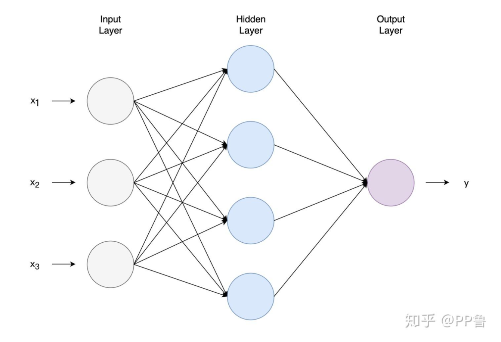

Grok Explain
让我们深入了解 Transformer 模型中的自注意力机制（self-attention mechanism），重点关注如何在 PyTorch 中使用 einsum 函数计算注意力权重（attention weights）。自注意力机制是 Transformer 的核心，它使得模型能够动态地衡量输入序列中不同部分的重要性。在这里，我们将探讨注意力权重的计算过程——特别是 Query (Q) 和 Key (K) 矩阵之间的点积，并提供完整的实现代码。
理解注意力权重
在自注意力机制中，注意力权重决定了序列中的每个 token 应该对其他 token 给予多少关注。这些权重通过测量 Query (Q) 和 Key (K) 向量之间的相似性来获得，通常使用点积进行计算。然后对结果进行缩放和归一化，以生成概率分布。
给定：
- Query 矩阵 Q：形状为
(batch_size, seq_len, d_k) - Key 矩阵 K：形状为
(batch_size, seq_len, d_k)
其中：
- batch_size 是一个批次中包含的序列数，
- seq_len 是每个序列的长度，
- d_k 是每个 query/key 向量的维度。
注意力权重的计算公式如下：
- 点积（Q K^T）：计算每个查询与键之间的相似性，得到一个形状为 (batch_size, seq_len, seq_len) 的矩阵。
- 缩放（Scaling）：除以
 可以防止数值过大导致梯度不稳定。
可以防止数值过大导致梯度不稳定。 - Softmax：沿最后一个维度将分数归一化为概率分布。
使用 einsum 进行点积计算
PyTorch 的 torch.einsum 是一个强大的张量运算工具，可以高效地执行点积操作。对于 Q K^T 的计算，我们定义如下操作：
'bik'：表示 Q 的形状 (batch_size, seq_len, d_k)'bjk'：表示 K 的形状 (batch_size, seq_len, d_k)（我们直接使用 K，einsum 会隐式处理转置）'bij'：输出形状 (batch_size, seq_len, seq_len)，每个元素表示查询与键之间的相似性
完整的自注意力机制实现
为了完整实现自注意力机制，我们还需要 Value 矩阵 V，其形状为 (batch_size, seq_len, d_v)（通常 d_v = d_k）。注意力权重将应用于 V 来生成输出：
'bij'：注意力权重的形状(batch_size, seq_len, seq_len)'bjd'：V 的形状(batch_size, seq_len, d_v)'bid'：输出形状(batch_size, seq_len, d_v)
以下是完整的实现代码：
import torch
import torch.nn.functional as F
import math
def self_attention(Q, K, V):
"""
实现自注意力机制
参数：
Q (torch.Tensor): Query 矩阵，形状为 (batch_size, seq_len, d_k)
K (torch.Tensor): Key 矩阵，形状为 (batch_size, seq_len, d_k)
V (torch.Tensor): Value 矩阵，形状为 (batch_size, seq_len, d_v)
返回：
output (torch.Tensor): 自注意力机制的输出，形状为 (batch_size, seq_len, d_v)
"""
# 获取 key 向量的维度
d_k = Q.size(-1)
# 计算 Q 和 K^T 的点积
attention_scores = torch.einsum('bik,bjk->bij', Q, K)
# 对分数进行缩放
attention_scores = attention_scores / math.sqrt(d_k)
# 应用 softmax 得到注意力权重
attention_weights = F.softmax(attention_scores, dim=-1)
# 将注意力权重应用于 value 矩阵 V
output = torch.einsum('bij,bjd->bid', attention_weights, V)
return output
# 示例用法
batch_size, seq_len, d_k, d_v = 2, 4, 64, 64
Q = torch.randn(batch_size, seq_len, d_k)
K = torch.randn(batch_size, seq_len, d_k)
V = torch.randn(batch_size, seq_len, d_v)
output = self_attention(Q, K, V)
print(output.shape) # 预期输出: torch.Size([2, 4, 64])
代码解释
- 点积计算：
torch.einsum('bik,bjk->bij', Q, K)计算原始注意力分数。 - 缩放操作：除以 (\sqrt{d_k}) 保证数值稳定性。
- Softmax 归一化：
F.softmax(..., dim=-1)沿着 key 维度对分数进行归一化。 - 加权求和：
torch.einsum('bij,bjd->bid', attention_weights, V)通过对 V 加权生成最终输出。
这个实现简洁、高效，并利用了 einsum 来优雅地处理张量操作，是一个理解 Transformer 中自注意力机制的实用示例。
自己的理解
第一步
\( Q = X W^Q \)
\( K = X W^K \)
\( V = X W^V \)
神经网络的计算，就是seq_len ✖ d_k个数字，每个数字乘一个参数 再累加，得到隐藏层的第一个节点数值，继续，每个数字再乘一组参数，得到隐藏层第二个节点的数值。以此计算
再累加，得到隐藏层的第一个节点数值，继续，每个数字再乘一组参数，得到隐藏层第二个节点的数值。以此计算  个节点的值，所以参数数量是多少？
个节点的值，所以参数数量是多少？ (seq_len, d_k, t)

第二步
\(Q\)的Shape: \((\text{batch\_size}, \text{seq\_len}, d_k)\)
\(a_{bsu}\) 代表什么: 代表第 \(b\) 个batch中, 第 \(s\) 个token, 与第 \(u\) 个token的注意力权重
转成公式:
# Compute the dot product between Q and K^T
attention_scores = torch.einsum('bik,bjk->bij', Q, K)
# Scale the scores
attention_scores = attention_scores / math.sqrt(d_k)
# Apply softmax to get attention weights
attention_weights = F.softmax(attention_scores, dim=-1)
第三步
Apply attention weights to the value matrix V
\(V\) 的形状：（batch_size, seq_len, head_size）
\(attention_weight\) 的形状：(batch_size, seq_len, seq_len)
\(attention_weight\) 的意义：
\(b_{111}\)